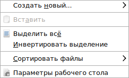
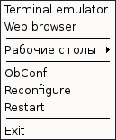
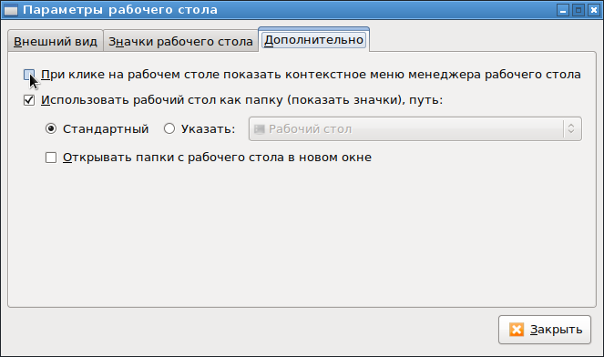

Если играться с настройками рабочего стола LXDE, то может возникнуть следующая ситуация: перестает появляться меню для вызова настроек параметров рабочего стола. То есть, вместо привычного контекстного меню рабочего стола LXDE:

... начинает появляться вот такое меню DE:

Это происходит в случае, если поставить галку "При клике на рабочем столе показывать контекстное меню менеджера рабочего стола:

Вопрос: как вернуть стандартное контекстное меню рабочего стола LXDE?
Для решения этого вопроса надо отредактировать файл:
~/.config/pcmanfm/LXDE/desktop-items-*.conf
где вместо звездочки "*" используется номер рабочего стола, на котором возникла проблема. В этом файле надо просто найти опцию
show_wm_menu=1
и заменить ее на
show_wm_menu=0
В разных версиях LXDE эти настройки могут находиться в разных файлах. В интернете пишут, что эта опция может находиться в файле ~/.config/pcmanfm/main.lxde.